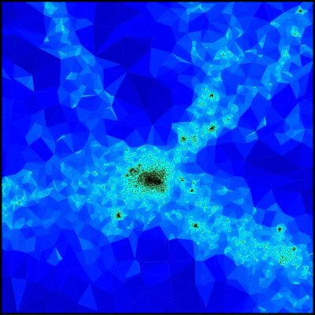
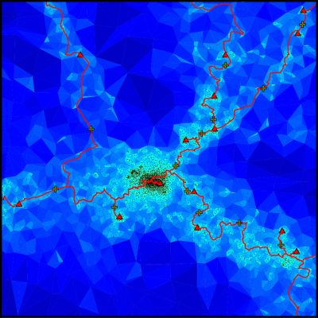
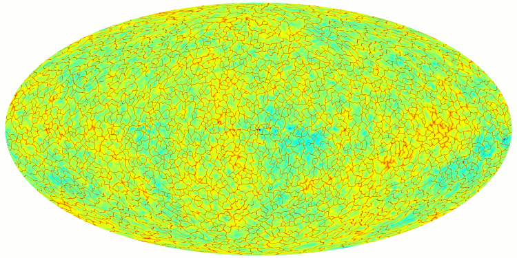
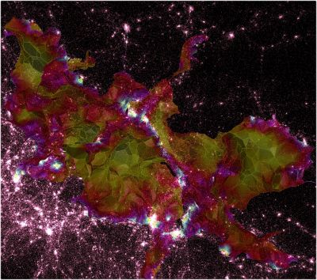
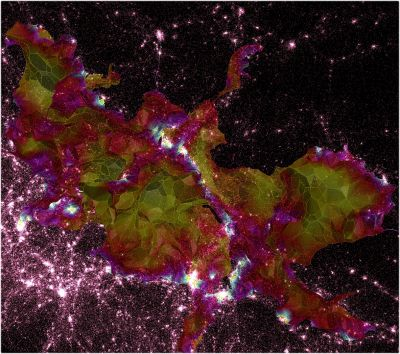
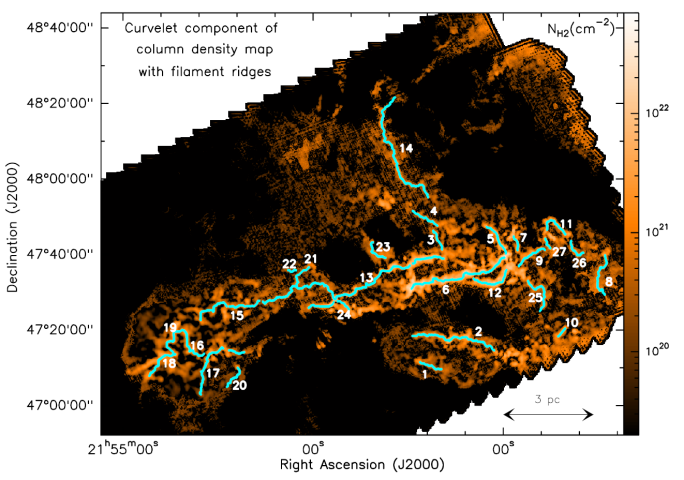

DisPerSE stands for Discrete Persistent Structures Extractor
and its main purpose is to identify persistent topological features such as peaks, voids, walls and in particular filamentary structures within sampled distributions in 2D, 3D, and possibly more ...
Although it was initially developed with cosmology in mind (for the study of the properties of filamentary structures in the so called comic web of galaxy distribution over large scales in the Universe), the present version is quite versatile and should be useful for any application where a robust structure identification is required, for segmentation or for studying the topology of sampled functions (like computing persistent Betti numbers for instance).
DisPerSE is able to deal directly with noisy datasets using the concept of persistence (a measure of the robustness of topological features) and can work indifferently on many kinds of cell complex (such as structured and unstructured grids, 2D manifolds embedded within a 3D space, discrete point samples using delaunay tesselation, Healpix tesselations of the sphere, ...). The only constraint is that the distribution must be defined over a manifold, possibly with boundaries.
Overview
›Purpose
›Examples of applications
Here are a few examples of what DisPerSE can do (hover the cursor over the pictures for a short description) :

")



 identified in the simulated distribution of dark matter. Structures where identified over the full 3D distribution, but only a 20Mpc thick slice is shown for convenience.") 


›General concepts of Morse theory
In DisPerSE, structures are identified as components of the Morse-Smale complex of an input function defined over a - possibly bounded - manifold. The Morse-Smale complex of a real valued so-called Morse function is a construction of Morse theory which captures the relationship between the gradient of the function, its topology, and the topology of the manifold it is defined over.

Two central notions in Morse theory are that of critical point and integral line (also called field line) : (see the upper left frame of figure 1)
- -Critical points are the discrete set of points where the gradient of the function is null. For a function defined over a 2D space, there are three types of critical points (4 in 3D, ...), classified by their critical index. In 2D, minima have a critical index of 0, saddle points have a critical index of 1 and maxima have a critical index of 2. In 3D and more, different types of saddle points exist, one for each non extremal critical index.
- -Integral lines are curves tangent to the gradient field in every point. There exist exactly one integral line going through every non critical point of the domain of definition, and gradient lines must start and end at critical points (i.e. where the gradient is null).
Because integral lines cover all space (there is exactly one critical line going through every point of space) and their extremities are critical points, they induce a tessellation of space into regions called ascending (resp. descending) k-manifolds where all the field lines originate (respectively lead) from the same critical point (see ascending and descending 2-manifolds on figure 1, upper right and lower left panels). The number of dimensions k of the regions spanned by a k-manifold depend directly on the critical index of the corresponding critical point: descending k-manifolds originate from critical points of critical index k while the critical index is N-k for ascending manifolds, with N the dimension of space.
The set of all ascending (or descending) manifolds is called the Morse complex of the function. The Morse-Smale complex is an extension of this concept: the tessellation of space into regions called p-cells where all the integral lines have the same origin and destination (see figure 1, lower right frame). Each p-cell of the Morse-Smale complex is the intersection of an ascending and a descending manifold and the Morse-Smale complex itself is a natural tessellation of space induced by the gradient of the function. Figure 2 below illustrates how components of the Morse-Smale complex can be used to identify structures in a 3D distribution.
›Persistence and simplification
Persistence itself is a relatively simple but powerful concept. To study the topology of a function, one can measure how the topology of its excursion sets (i.e. the set of points with value higher than a given threshold) evolves when the threshold is continuously and monotonically changing. Whenever the threshold crosses the value of a critical point, the topology of the excursion change. Supposing that the threshold is sweeping the values of a 1D function from high to low, whenever it crosses the value of a maximum, a new component appears in the excursion, while two components merge (i.e. one is destroyed) whenever the threshold crosses the value of a minimum. This concept can be extended to higher dimensions (i.e. creation/destruction of hole, spherical shells, ....) and in general, whenever a topological component is created at a critical point, the critical point is labeled positive, while it is labeled negative if it destroys a topological component. Using this definition, topological components of a function can be represented by pairs of positive and negative critical points called persistence pairs. The absolute difference of the value of the critical points in a pair is called its persistence : it represents the lifetime of the corresponding topological component within the excursion set.
The concept of persistence is powerful because it yields a simple way to measure how robust topological components are to local modifications of a function values. Indeed, noise can only affect a function's topology by creating or destroying topological components of persistence lower that its local amplitude. Therefore, it suffice to know the amplitude of noise to decide which components certainly belong to an underlying function and which may have been affected (i.e. created or destroyed) by noise. In DisPerSE, a persistence threshold can be specified (see options -nsig and -cut of mse) to remove topological components with persistence lower than the threshold and therefore filter noise from the Morse-Smale complex (see figure 2 below).
A very useful way to set the persistence threshold is to plot a persistence diagram, in which all the persistence pairs are represented by points with coordinates the value at the critical points in the pair (see option -interactive of mse or see pdview and read the tutorial section to learn how to compute and use persistence diagrams).